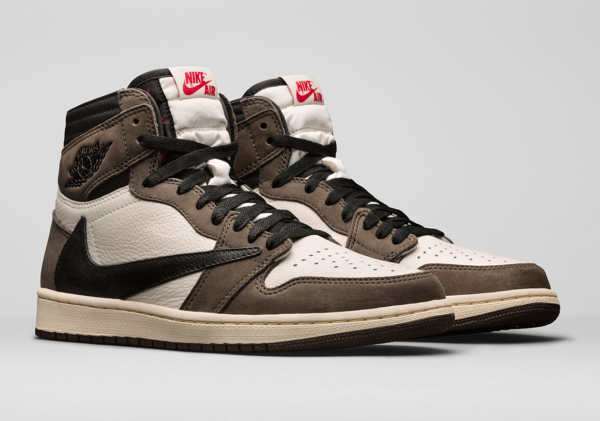

Travis Scott x Air Jordan 1 ‘Cactus Jack’
Fecha de lanzamiento: 11 de mayo de 2019
El 11 de mayo, Scott y Jordan Brand lanzaron su zapatilla más codiciada hasta la fecha. El Air Jordan 1 con un swoosh invertido, bolsillo escondido y gamuza marrón (inspirado en el patio de su infancia) se dejó ver por sorpresa durante la presentación de Scott en los premios Grammy a principios de ese año.
Travis Scott x Nike Air Force 1 Low ‘White’
Fecha de lanzamiento: 5 de diciembre de 2017
El Travis Scott x Air Force 1 Low, fue el primer lanzamiento oficial de Scott para Nike, como el inédito Jordan Trunner LX, se produjo en medio de una campaña retro. Las AF1 apostaron a la novedad y la nostalgia, presentaba logos de Nike desmontables.
Travis Scott x Nike Air Max 270 React
Fecha de lanzamiento: 29 de mayo 2020
Las Nike x Travis Scott Air Max 270 "Cactus Trails" cuentan con un estilo inspirado en la imaginación de Travis Scott para huir de la realidad y escapar con sus seguidores a un mundo paralelo. El diseño presenta una estética noventera y una sensación cómoda. Los tonos marrones, tostados y naranjas pintados en la capa base de la espuma expuesta están inspirados en los revestimientos utilizados en las prendas de trail con una paleta de colores que recuerda a la pasión de Travis Scott por el estilo vintage.
Travis Scott x Air Jordan 4 ‘Cactus Jack’
Fecha de lanzamiento: 9 de junio de 2018
Inspirado por la ya desaparecida franquicia Houston Oilers NFL y su sello discográfico “Cactus Jack”, el lanzamiento marca el debut oficial de Scott para Jordan, que se celebró con un carnaval en su ciudad natal.
Muchos consideraron que el zapato fue el mejor sneaker de 2018. Scott también produjo para varios amigos y parejas de familiares este Air Jordan 4, en púrpura, gris oscuro y verde oliva.
Travis Scott X Air Jordan 6 Retro ‘Olive’
Fecha de lanzamiento: 11 de octubre 2019
El Travis Scott x Air Jordan 6 Retro ‘Olive’ representa una colaboración entre el rapero de Houston y Jordan Brand. Esta versión del AJ 6, que Scott debutó mientras actuaba durante el medio tiempo del Super Bowl 53, se lanzó en octubre de 2019. Presenta un color oliva medio, negro, vela y rojo universitario junto con varios elementos únicos: un bolsillo pequeño con un broche el cuello, una parte superior de nobuk y ante, el logo “Cactus Jack” de Scott en el talón y una suela translúcida que brilla en la oscuridad.